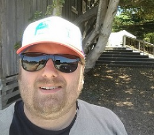

Niklas sida under kursen Databaser

Välkommen till min sida!
Niklas Arvidsson heter jag och bor i Hudiksvall. En liten kuststad i södra Norrland.
Född och uppväxt i Njurunda, ett litet samhälle strax utanför Sundsvall. Levde och frodas där till jag 2000 träffade en hälsingetös vid namn Anna. Åkte och hälsade på henne i början av sommaren och lyckades bli kvar.
2002 började jag som lärare på en skola i centrala Hudiksvall som heter Skolbyn och har de senaste 17 åren spenderat 13 av dem där. Gjort en del grejer emellanåt, bl.a. jobbat på svenska skolan i Fuengirola, men alltid kommit tillbaka till min första arbetsgivare.
Läsåret 16/17 satte jag dock ner foten efter att känslan att det är dags att gör något nytt växt sig allt för starkt och sa upp mig. Kom in på kurspaketet Webbprogammering och databaser vid Blekinge Tekniska Högskolan och blev student igen.
Har dock inte riktigt släppt grundskolan ännu, då räkningarna fortsätter att att trilla in, och arbetar två-tre dagar i veckan som vikarie på de skolor i kommunen som vill ha mig.
Trivs rätt bra med livet nu för tiden även om de gråa håren blivit fler efter de två första kursmomenten och ser med skräckblandad förtjusning fram emot även detta moment, databaser.
Hörs!